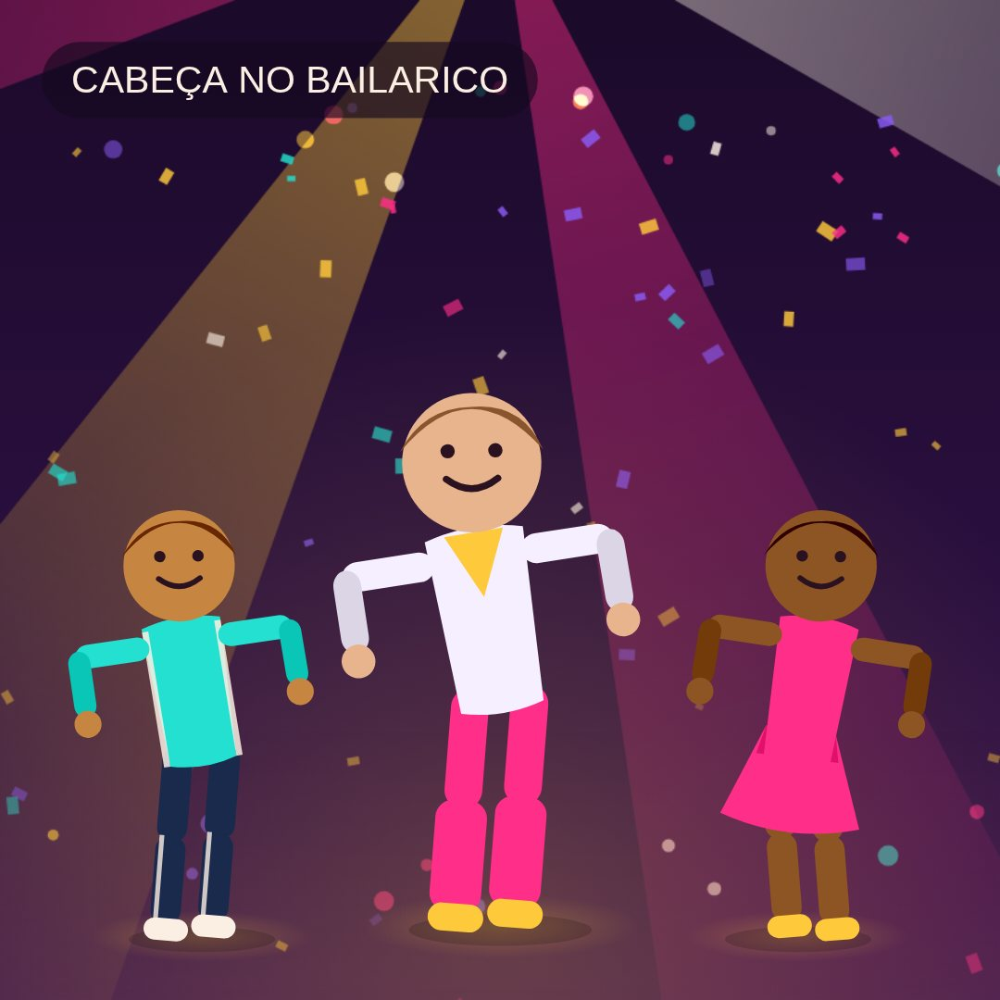
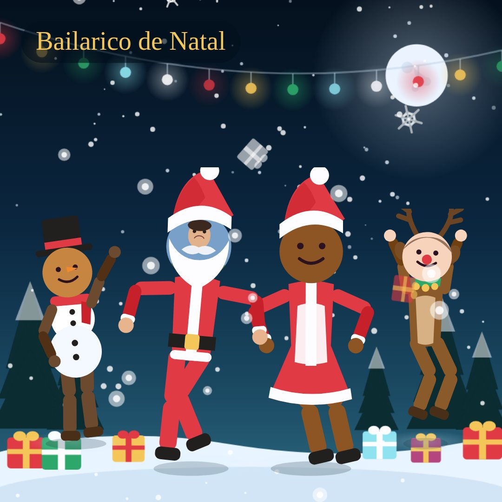

escolhe a versão que queres abrir

Versão original
Solo, trio ou grupo de quatro — cada cara vai parar a um corpo de dançarino e apanha o compasso da música que estiver a tocar.
Abrir →
Edição especial
A mesma ideia com neve, prendas e tema próprio — com um tema de Natal original tocado dentro da página.
Abrir →Edição de festa
A versão para a Quinta: mini na mão, caixote de cerveja no palco e agora também com fundo do palco à escolha, com foto tua.
Abrir →Todas ficam no teu aparelho — nenhuma foto ou som é enviado para lado nenhum.
Nota: index_6.html e index_7.html no repositório são cópias antigas iguais ao bailarico.html — já não têm ligação a partir daqui, podes apagá-las.